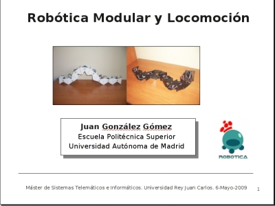

El 6 de Mayo de 2009 impartí una charla sobre Robótica Modular y Locomoción como parte del Máster de Sistemas Telemáticos e Informáticos de la Universidad Rey Juan Carlos, invitado por Jose María Cañas.
Las transparencias y videos mostrados están disponibles en esta página del wiki.